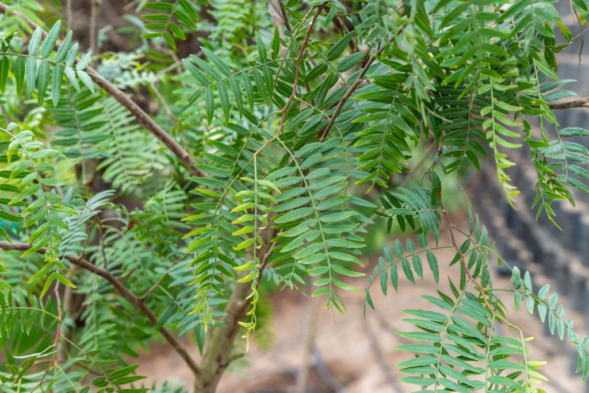

La problemática encontrada fue que a causa del constante cambio climático las personas, niños, adultos mayores tienen a sufrir enfermedades respiratorias como la tos , gripe,asma,etc ; dolores musculares especialmente en las articulaciones como también en las manos, rodillas, etc; y el aumento de zancudos en nuestra localidad por la humedad.
